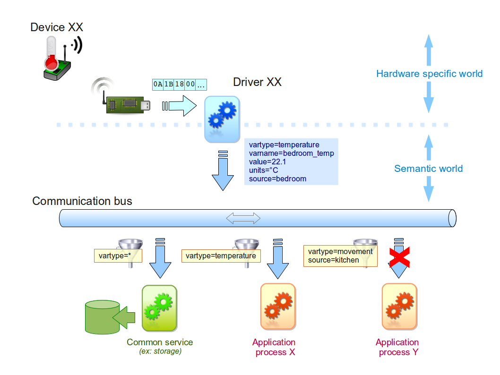
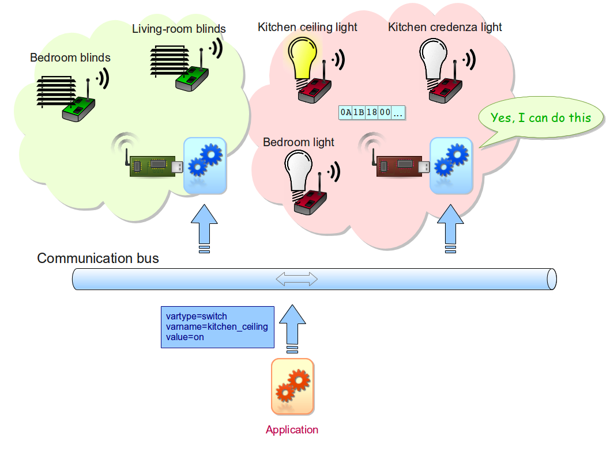

All you need to develop with and for CSTBox.
The framework architecture has been inspired by the Unix/Linux philosophy with respect to decomposition of features and functions.
Instead of being made of a big monolothic software, it is broken in small parts, each one have a well defined and limited role, and runing in its own system process. In addition, services provided by the underlying Linux are exploited as much as possible to optimize the development efforts.
Communications between these building blocks are based on 3 main principles :
First two items above rely on D-Bus features. In addition to make inter-process transparent, it also allows implementation language neutral invocations.
The overall components set is divided into :
Most of the time, active extensions such as device network coordinators for instance are implemented as a service started during the system init sequence, and often acting as a producer or/and consumer of messages on the communication bus. For instance the ModBus network coordinator service takes care of polling the attached devices and emitting the events corresponding to the data returned by them, according to the policy defined in the network configuration. The sensor events storage service will in contrary listen for sensor events on the bus and store them using the appropriate persistence layer.
Other services can just deal with stored data. As an exemple, a periodic sensor data upload service will be scheduled to run at fixed periods (relying on the system cron service), extract events data from the local storage thanks to inter-process communication with the local storage manager service, format them according to the destination tier and send the result over Internet using the appropriate protocol.
The communications inside CSTBox framework are based on a few key concepts and paradigms :
The combination of these base recipes allows an open and as affordable as possible extension and customization process, since assembled parts can be developed in any suited language.
The downstream path, from the equipments to the application, is illustrated hereafter : 
One can see here that what we call the driver is responsible for translating the specific data frames coming from the equipments into technology agnostic events emitted on the communication bus.
On the data consumers side, the involved components listen to the traffic on the communication bus, eventually tuning them for selecting the messages related to changes of variables they are interpreted by. This filtering is based on the content of the message fields. This behaviour can be seen what we do when choosing a radio station on a receiver.
The reverse path, from application to equipments, is shown in next picture :
The drivers use the same message listening and filtering as before, to select those related to changes in the control variables pertaining to the kind of devices they manage.
In order to be easily produced and analyzed, the transported messages are standard strings encoded in JSON. Although a bit more costly in terms of data size and processing, this option as been preferred to a binary format for the following reasons :
| timestamp | vartype | varname | data |
A comfortable collection of components is provided out of the box, covering the core features required to deal with sensor data collection and storage, box configuration, process scheduling,…
Here they are :
Here is a screen-shot of the desktop, showing some applets (both stock and application specific ones) :
The core part of the framework is written in Python.
Python being included in common Linux distributions, even lighter ones, you should have nothing special to do most of the time, apart if you are building a Linux from scratch or using some more exotic distributions.
We have used Debian based distributions for most of the applications we have deployed in the field during the various projects and experiments CSTBox has been used for, installed on nano-PC type boxes, and even on card credit size computers such as the Raspberry Pi. In some specific cases, we were constrained to use very low-end targets (field controllers for instance) running LFS or alike, but could successfully install and run the Python VM, and execute CSTBox based applications without any problem.
Since our approach is implementation language agnostic, there is no mandatory dependency.
For instance, if you only need to work with sensor data which have been stored by our included recorder, you do not need any special library, since the storage is organized in a collection of pure tabulated text files. Although this can sound strange, it has been proven well suited. For instance, a currently running application, collecting various ambient data using sensors disseminated in a house, manages nearly 3 million records using this technique, without any problem and using a reasonable storage space.
If the component you want to create will communicate with some of the ones included in the framework distribution, you will need to be able to send and/or receive messages on D-Bus. Fortunately, D-Bus implementation is very portable (it even runs on Mac OSX and Windows) and bindings exist for a lot of programming languages. So you'll just have to pick and install the appropriate one.
Some recipes for common tasks in the life of a CSTBox developper or integrator.
CSTBox can be developed using different languages. Here is a list of available documentation for some of them: